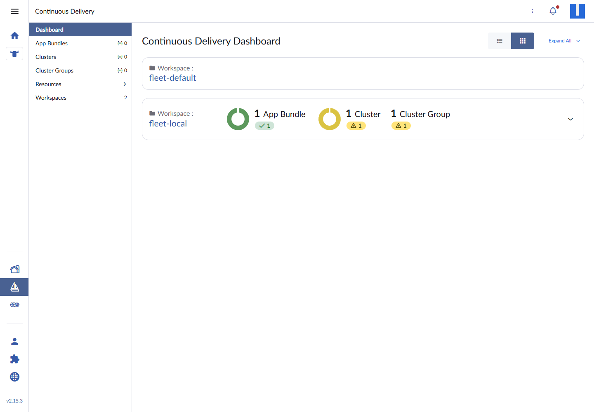
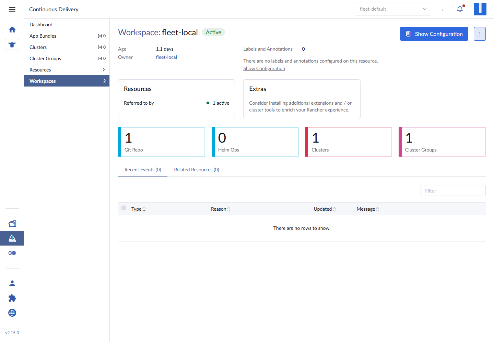
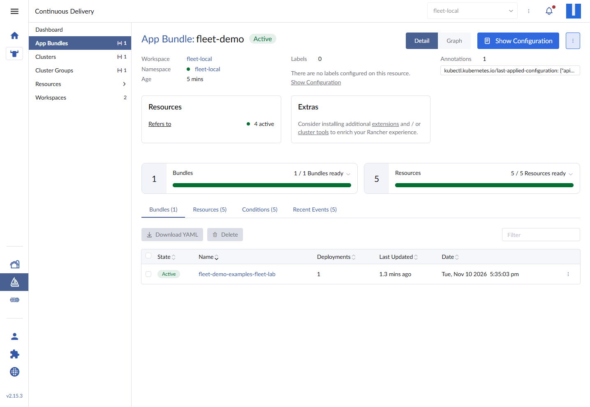
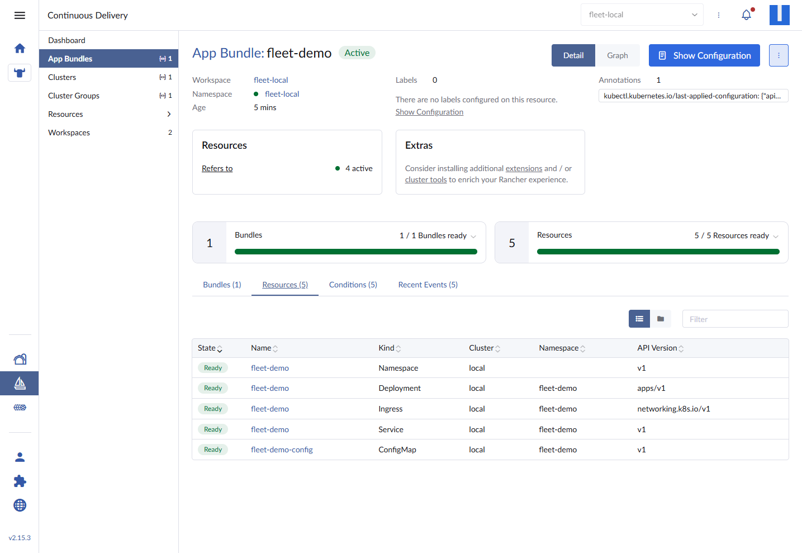
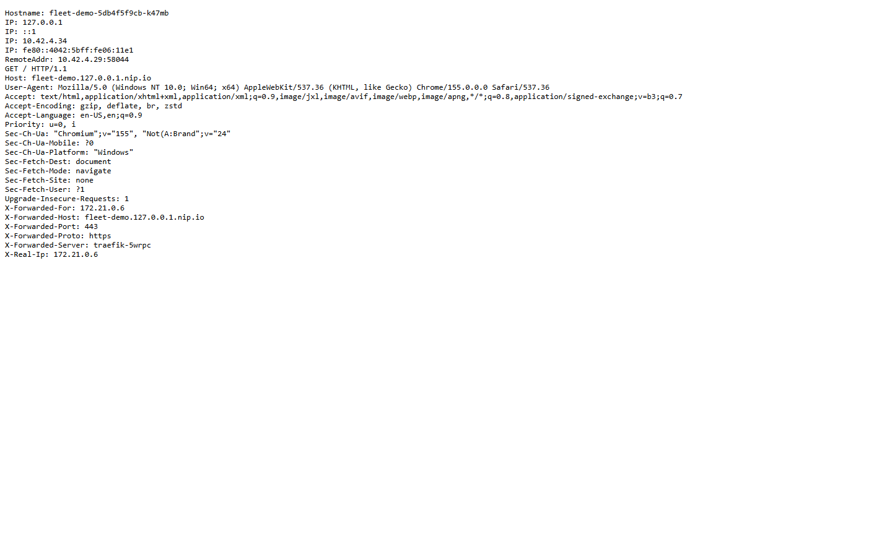
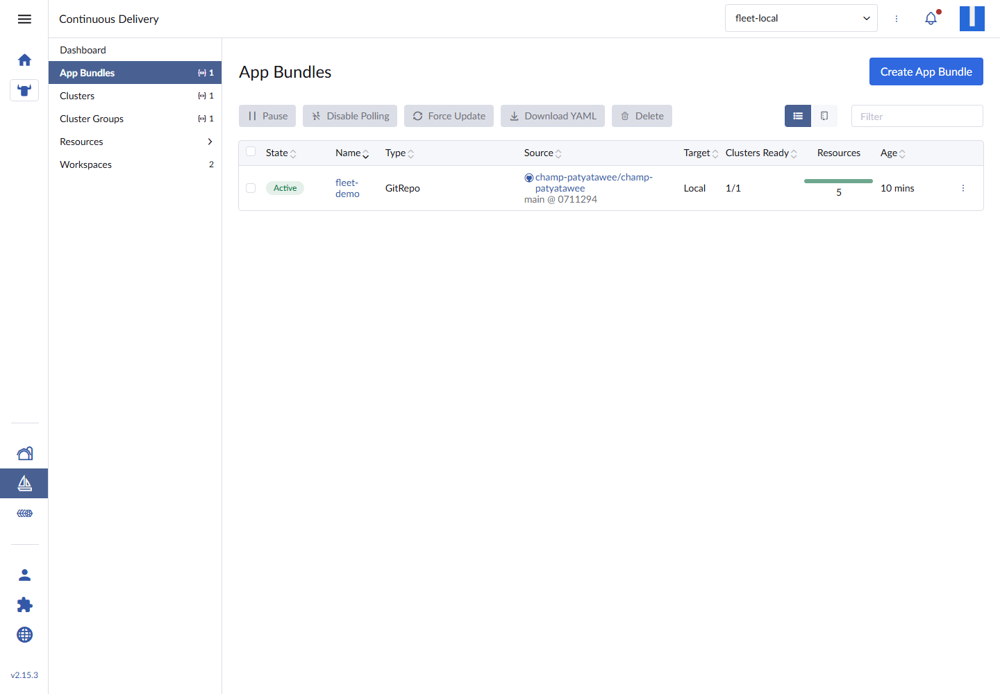
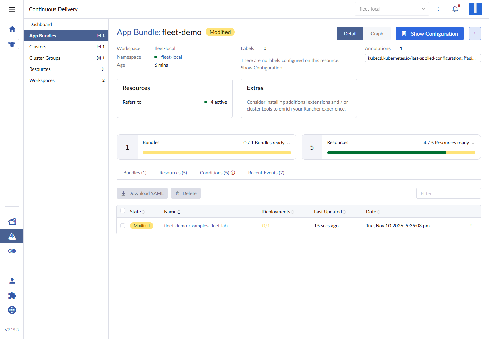
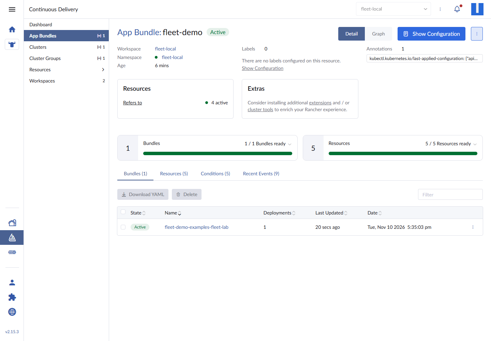

Rancher 2.15 installs Fleet by default. Most people never notice. It sits in cattle-fleet-system, waits for a GitRepo, and does nothing until you give it a repository to reconcile.
That is a useful starting point for a GitOps lab. There is no extra controller to install and no second management plane to run. The question is whether Fleet's reconciliation model is actually understandable when you watch it work: what is a Bundle, why does a cluster get its own namespace, and what happens when someone changes a Deployment by hand?
I built this POC on the existing 4-node k3d lab: one Rancher local cluster, one Git repository, one small application, and two deliberate changes — one through Git and one through kubectl. The second one is where the interesting behavior lives.
What Fleet actually manages
Fleet has four objects worth understanding before touching YAML:
- GitRepo — the desired source: repository URL, branch, path, and target clusters.
- Bundle — the content Fleet produced from that path. A Bundle is cluster-independent.
- BundleDeployment — the per-cluster assignment of a Bundle, created in a generated namespace such as
cluster-fleet-local-local-1a3d67d0a899. - Cluster / ClusterGroup — the targets. A
GitRepocan target one cluster by name, a label selector, or a group.
The reconciliation chain is: Git commit → GitRepo → Bundle → BundleDeployment → resources in the target cluster. Fleet uses Helm to install the BundleDeployment content, which is why Rancher can show a Helm release behind a Git-managed application.
The local Rancher cluster is registered as fleet-local/local. That is the only target in this POC.
Scope: one cluster, not a multi-cluster claim
This lab proves:
- a public Git repository can drive resources into the Rancher local cluster;
- the same commit produces a Bundle and a BundleDeployment;
- a Git change updates running resources;
- drift correction can revert a manual
kubectlchange.
It does not prove multi-cluster targeting, private-repository credentials, webhook latency, or Fleet HA. Those are production topics, not claims from this single-cluster run.
Versions in the lab
- k3d
v5.9.0 - k3s
v1.36.5+k3s1, one server and three agents - Rancher
2.15.3 - Fleet chart
110.0.3+up0.16.3, Fleet0.16.3 - Traefik chart
42.3.1, appv3.7.17 - Demo image
traefik/whoami:v1.11.0
Fleet was already installed by Rancher. I did not install a second copy.
Prerequisites and context lock
Run the Kubernetes commands from WSL with the Windows kubeconfig:
export KUBECONFIG=/mnt/c/Users/C/.kube/config
kubectl config current-context
kubectl get nodes -o wide
The context must be k3d-rancher-lab. The lab had four Ready nodes:
NAME STATUS ROLES AGE VERSION
k3d-rancher-lab-agent-0 Ready <none> 27h v1.36.5+k3s1
k3d-rancher-lab-agent-1 Ready <none> 27h v1.36.5+k3s1
k3d-rancher-lab-agent-2 Ready <none> 27h v1.36.5+k3s1
k3d-rancher-lab-server-0 Ready control-plane 27h v1.36.5+k3s1
Everything below targets this context. Do not apply a GitRepo while pointed at another cluster.
Step 1: Confirm Fleet is already running
Check the Rancher-managed releases and pods:
helm list -n cattle-fleet-system
kubectl -n cattle-fleet-system get pods
NAME NAMESPACE CHART APP VERSION
fleet cattle-fleet-system fleet-110.0.3+up0.16.3 0.16.3
fleet-crd cattle-fleet-system fleet-crd-110.0.3+up0.16.3 0.16.3
NAME READY STATUS RESTARTS
fleet-controller-7bbf999986-jtbwx 3/3 Running 6
gitjob-7b44bfbb8b-nlzcf 1/1 Running 2
helmops-699498bc87-pqxbt 1/1 Running 2
The CRDs are the API surface you will use:
kubectl get crd | grep fleet.cattle.io
bundledeployments.fleet.cattle.io
bundles.fleet.cattle.io
clustergroups.fleet.cattle.io
clusters.fleet.cattle.io
gitrepos.fleet.cattle.io
Open Rancher and go to Continuous Delivery. The dashboard is empty until a Git source exists:

The fleet-local workspace already contains one cluster — the local Rancher cluster. That is the target for this POC.
Step 2: Put the application in Git
I added the manifests under examples/fleet-lab/ in the same public repository as this blog. The path is part of the GitOps contract, so keep it explicit.
examples/fleet-lab/
├── namespace.yaml
├── configmap.yaml
├── deployment.yaml
├── service.yaml
├── ingress.yaml
├── fleet.yaml
└── README.md
The Deployment runs traefik/whoami, a tiny HTTP server that prints the pod hostname and request headers. That makes it obvious which replica answered through Traefik.
apiVersion: apps/v1
kind: Deployment
metadata:
name: fleet-demo
namespace: fleet-demo
labels:
app: fleet-demo
spec:
replicas: 2
selector:
matchLabels:
app: fleet-demo
template:
metadata:
labels:
app: fleet-demo
spec:
containers:
- name: whoami
image: traefik/whoami:v1.11.0
ports:
- name: http
containerPort: 80
envFrom:
- configMapRef:
name: fleet-demo-config
resources:
requests:
cpu: 25m
memory: 32Mi
limits:
cpu: 100m
memory: 64Mi
securityContext:
allowPrivilegeEscalation: false
capabilities:
drop: ["ALL"]
runAsNonRoot: true
runAsUser: 65532
readOnlyRootFilesystem: true
The Ingress uses the existing Traefik class and a nip.io hostname:
apiVersion: networking.k8s.io/v1
kind: Ingress
metadata:
name: fleet-demo
namespace: fleet-demo
spec:
ingressClassName: traefik
rules:
- host: fleet-demo.127.0.0.1.nip.io
http:
paths:
- path: /
pathType: Prefix
backend:
service:
name: fleet-demo
port:
number: 80
Fleet also supports a fleet.yaml next to the manifests. This one sets the default namespace for resources that do not declare one:
defaultNamespace: fleet-demo
labels:
app.kubernetes.io/part-of: fleet-demo
Commit and push that directory before creating the GitRepo. Fleet checks out a commit; it does not read your working tree.
Step 3: Create the GitRepo
A GitRepo is a normal Fleet custom resource. This one targets the local cluster by name:
apiVersion: fleet.cattle.io/v1alpha1
kind: GitRepo
metadata:
name: fleet-demo
namespace: fleet-local
spec:
repo: https://github.com/champ-patyatawee/champ-patyatawee
branch: main
paths:
- examples/fleet-lab
targets:
- clusterName: local
correctDrift:
enabled: true
Apply it:
kubectl apply -f fleet-gitrepo.yaml
kubectl -n fleet-local get gitrepo fleet-demo -o wide
NAME REPO COMMIT BUNDLEDEPLOYMENTS-READY STATUS
fleet-demo https://github.com/champ-patyatawee/champ-patyatawee cb50c64a01a5a1b4d34f255a2c9cb8c6981a1884 0/0
0/0 is normal for the first few seconds. Fleet has recorded the Git commit but has not created and scheduled the BundleDeployment yet.
You can also create the same object in Rancher under Continuous Delivery → App Bundles → Create App Bundle, but applying the CR makes the spec easier to review in Git.
Step 4: Watch Fleet build the deployment chain
After a few seconds, the Bundle and BundleDeployment appear:
kubectl -n fleet-local get gitrepo fleet-demo -o wide
kubectl -n fleet-local get bundles
kubectl -n cluster-fleet-local-local-1a3d67d0a899 get bundledeployments
NAME REPO COMMIT BUNDLEDEPLOYMENTS-READY STATUS
fleet-demo https://github.com/champ-patyatawee/champ-patyatawee cb50c64a01a5a1b4d34f255a2c9cb8c6981a1884 0/1
NotReady(1) [Cluster fleet-local/local]; deployment.apps fleet-demo/fleet-demo
[progressing] Deployment does not have minimum availability., Available: 0/2
That first NotReady is not a Fleet failure. The two pods were still pulling traefik/whoami:v1.11.0. Fleet reported what the Deployment reported, then recovered:
NAME REPO COMMIT BUNDLEDEPLOYMENTS-READY STATUS
fleet-demo https://github.com/champ-patyatawee/champ-patyatawee cb50c64a01a5a1b4d34f255a2c9cb8c6981a1884 1/1
The generated namespace is the important detail. cluster-fleet-local-local-1a3d67d0a899 is Fleet's per-cluster workspace for the local cluster; do not create resources there by hand.
In Rancher, the workspace now shows one GitRepo, one cluster, and one cluster group:

The App Bundles list shows the source commit, the target, and the resource count:
Open the bundle to see the per-cluster readiness:

The Resources tab is the useful audit view. It lists every object Fleet applied, with its cluster and namespace:

Five resources are expected from the manifest path: Namespace, Deployment, Ingress, Service, and ConfigMap.
Step 5: Verify the application, not just the status
Fleet being Active does not prove the Ingress routes traffic. Check the user-facing result:
curl -sk https://fleet-demo.127.0.0.1.nip.io/
Hostname: fleet-demo-5db4f5f9cb-xkw6d
IP: 127.0.0.1
IP: 10.42.1.52
Host: fleet-demo.127.0.0.1.nip.io
X-Forwarded-Proto: https
X-Forwarded-Server: traefik-5wrpc

The Hostname field changes between replicas. That is also a quick way to see whether a rollout created new pods.
Step 6: Change the Deployment through Git
The initial commit had replicas: 2. I changed it to replicas: 3 in Git and pushed:
git add examples/fleet-lab/deployment.yaml
git commit -m "Scale Fleet demo to three replicas"
git push origin main
The GitRepo status moved to the new commit:
NAME REPO COMMIT BUNDLEDEPLOYMENTS-READY STATUS
fleet-demo https://github.com/champ-patyatawee/champ-patyatawee 0711294a4e555560186034fc085c9bfc5b4a9f48 1/1
The Deployment followed:
NAME READY UP-TO-DATE AVAILABLE AGE
fleet-demo 3/3 3 3 9m44s

The delay was about a minute. Fleet polls the repository by default; a webhook can shorten the feedback loop, but the commit is still the source of truth. The Bundle changed because the path content changed, and Fleet created a new BundleDeployment revision for the same cluster.
I reverted the manifest to replicas: 2 and pushed again afterward, so the final lab state matches the article's starting point.
Step 7: Prove drift correction
This is the part worth testing yourself. With correctDrift.enabled: true, scale the Deployment by hand:
kubectl -n fleet-demo scale deployment fleet-demo --replicas=5
kubectl -n fleet-demo get deployment fleet-demo
NAME READY UP-TO-DATE AVAILABLE AGE
fleet-demo 2/5 5 2 6m56s
Fleet noticed the difference and marked the BundleDeployment Modified instead of silently accepting it:

With drift correction enabled, it restored the replica count from Git within about 30 seconds:
NAME READY UP-TO-DATE AVAILABLE AGE
fleet-demo 2/2 2 2 8m5s

The first time I tested this, the Bundle went to Modified but stayed there. The GitRepo had been created without a correctDrift block, so Fleet stored the patch it would apply ({"spec":{"replicas":2}}) without reverting the live object. Enabling the field changed the behavior:
kubectl -n fleet-local patch gitrepo fleet-demo \
--type merge \
--patch '{"spec":{"correctDrift":{"enabled":true}}}'
That is a real operational trap. If you expect Fleet to undo manual changes, make correctDrift an explicit part of the GitRepo spec and verify it with a deliberate scale test. Do not assume “GitOps” means “drift is always reverted.”
How this maps to production
The single-cluster flow above is the same model used for many clusters, with a few additions:
- Target by labels, not names. Label downstream clusters with
env=prodorteam=platform, then use aclusterSelectororClusterGroup. A list of cluster names becomes stale as soon as the fleet grows. - Use
targetCustomizationsfor per-cluster overrides. Different replicas, domains, or Helm values belong infleet.yaml, not in duplicated directories. - Authenticate private repositories properly. Use a GitRepo secret or a Rancher Git account; never put a token in the manifest.
- Decide on drift policy deliberately.
correctDrift.enabled: trueis a strong statement about ownership. It is appropriate for resources Fleet owns and dangerous for resources another controller also mutates. - Keep secrets out of the Bundle. Fleet stores the content and applies it. Use External Secrets, Sealed Secrets, or another secret workflow rather than committing plaintext.
- Watch the generated namespaces. BundleDeployments live under
cluster-fleet-*; those objects are Fleet's bookkeeping, not a place for manual edits. - Set expectations for latency. Polling is simple and works without inbound webhooks; it is not instant. If you need faster feedback, configure the repository webhook rather than shortening the polling interval blindly.
Fleet and Argo CD solve overlapping problems. Fleet is already integrated with Rancher and its cluster registration model; Argo CD has a different UI and application model. Running both against the same resources is a good way to create ownership conflicts. Pick one per resource set.
Troubleshooting notes from the lab
BUNDLEDEPLOYMENTS-READYshows0/1at first. Check the BundleDeployment status before assuming Fleet is broken. In this lab the Deployment was still pulling the image.Modifieddoes not always mean corrected. Checkspec.correctDrift.enabledon the GitRepo. Fleet can detect drift and still leave it in place.- The BundleDeployment namespace is generated. Find it with
kubectl get ns | grep cluster-fleet; do not hard-code the hash in automation. - A Git push is not a sync. Confirm the GitRepo
status.commitmatches the commit you expect. Fleet reads commits, not local uncommitted files. - The Ingress can be Ready before the app is reachable. Check the Service endpoints and the Traefik route with
curl, not only the Fleet resource list. - Private repositories fail differently. A public HTTPS clone can work with no credentials; a private repository needs a secret and the GitRepo must reference it. The failure usually appears in the GitRepo conditions, not in the workload.
Cleanup
Deleting the GitRepo tells Fleet to clean up the resources it owns:
kubectl -n fleet-local delete gitrepo fleet-demo
kubectl get ns fleet-demo
If the namespace remains because it was created outside Fleet's ownership, remove it deliberately:
kubectl delete namespace fleet-demo
Do not uninstall fleet, fleet-crd, or fleet-agent-local just to clean up one application. Rancher owns those components and other features depend on them.
What I would keep
Fleet is a good fit when Rancher is already the control plane. The useful pattern is not “put YAML in Git”; it is:
- one reviewable source path per application;
- a target defined by cluster identity or labels;
- a BundleDeployment status that tells you which cluster failed;
- drift policy that matches who owns the resource;
- a workflow that treats the Git commit as the audit record.
The most valuable result from this lab was not the green 5/5. It was seeing the Modified state and learning that Fleet will report drift long before it necessarily reverts it. That distinction is the difference between a dashboard and an operational control.